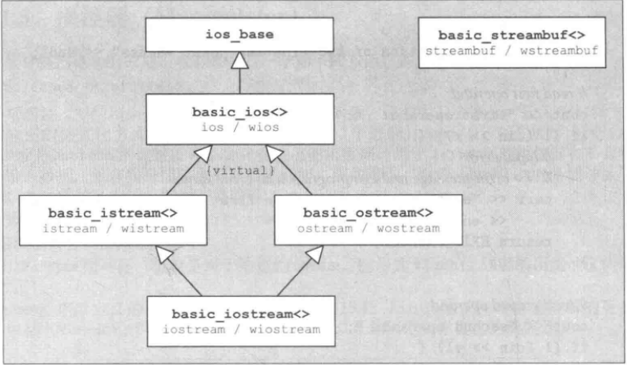

基本的stream class：
stream类的继承结构：

全局的stream对象（包含宽字符）：
- cin/wcin：isstream/wisstream。对应C中的stdin，从标准input通道读取数据
- cout/wcout：ostream/wostream，对应C中的stdout，将一般数据写到标准output通道
- cerr/wcerr：对应C中的stderr，默认情况下cerr无缓冲，将报错信息写到标准error通道
- clog/wclog：标准日志通道，C中没有对应的东西，默认情况下操作系统将它连接于cerr所连接的设备，但clog有缓冲
标准stream操作符：
- <<
- >>
- 特殊类型的IO：
- 数值类型：当读取数值类型时必须以至少一个数字起头，否则数字会被设为0而failbit被设置
- boolean：以数字表示，false为0，true为1，如果既不是0又非1，ios::failbit会被设置而抛出异常
- char和wchar_t：读入一个char和wchar_t字符时默认会跳过开头的空白字符
- stream buffer：操作符<<和>>可以直接用于读写stream buffer，这是运用C++ IOstream复制文件的最快办法
全局函数：
- getline：istream& getline (istream& is, string& str, char delim);/istream& getline (istream&& is, string& str, char delim);/istream& getline (istream& is, string& str);/istream& getline (istream&& is, string& str);
stream的状态：
- 表示stream状态的常量：定义了一些iostate的常量，用以反映stream的状态
- goodbit：一切都好，没有任何其他bit被设置
- eofbit：遇到end-of-file
- failbit：某个IO动作未成功；如果某项操作未完成但stream大致ok，这个bit就会设置。这通常是由于读取的格式错误
- badbit：致命错误，造成不确定状态
- 注意：
- eofbit常常和failbit同时出现，因为在end-of-file之后再试图读取数据会检测到end-of-file状态。读取最后一个字符时，eofbit并未设置，但再一次试图读取字符时就会导致eofbit和failbit同时被设置，因为读取动作也失败了。
- 这些常量定义于class ios_base内，因此需要加上作用域std::ios_base::eofbit；当然使用ios_base派生类也可以，在早期的实现版本中这些常量定义于class ios内。由于ios派生于ios_base，所以也可以这样使用：std::ios::eofbit
- 处理stream状态的成员函数：

// 检查failbit是否设置，若设置则清除之
if( strm.rdstate() & std::ios::failbit )
{
std::cout << "failbit was set" << std::endl;
strm.clear(strm.rdstate() & ~std::ios::failbit);
}
- stream状态和boolean条件测试
- operator bool()
- operator !()
stream的状态和异常
- exceptions(flags)：设定会触发异常的flag
- exceptions()：返回出发异常的flag
标准I/O函数
Input相关函数：
- int get()：读取下一个字符，返回读取的字符，或EOF；返回类型为traits::int_type。traits::eof()会返回EOF。对应C中的getchar()或getc()
- istream& get(char &c)：把下一个字符赋给实参c；返回stream，说明读取是否成功
- istream& get(char *str, streamsize count)/get(char *str, streamsize count, char delim)：两种形式都可读取多达count-1个字符，并存入str所指的字符序列中。第一种形式的读取终止条件是下一个字符是相应字符集中的换行符；第二种形式的终止条件是下一个字符是delim；返回状态说明读取是否成功；不会读取终止符delim；调用者必须确保str足够存入count个字符。
- istream& getline(char* str, streamsize count)/getline(char* str, streamsize count, char delim)：和get完全一样，除了终止读取时，读取内容包括换行符或delim，而非在两者之前就结束；因此当换行符或delim位于count-1个字符内时，会被读取，但不会被存储于str内；是不是自动换行？
- istream& read(char* str, streamsize count)：读取count个字符
- ignore：所有形式均提取字符舍弃不用，返回值都为istream&
- 方法：
- ignore()：忽略一个字符
- ignore(streamsize count)：可忽略多达count个字符
- ignore(streamsize cout, int delim)：可忽略多大count个字符，直到提取并舍弃delim
- 注：
- 如果countd的值等于std::numeric_limits<std::streamsize>::max()，那么delim或end-of-file之前的所有字符都被舍弃
- int peek()：返回stream内“下一个将被读取的字符”，但不真的把它读出来，下次读取结果便是该字符；如果不能够再读取任何字符，返回EOF：EOF即traits::eof()的返回值，对istream来说就是常量EOF
- unget()/putback(char c)：
- 将上次读取的字符放回stream，使之可被下次读取，都返回istream
- 区别为putback会检查传入的c是否确是上一次读取的字符
- 如果无法放回字符，或者putback发现待放字符不正确，就会设置badbit，可能抛出相应的异常
- 两函数可放回的最大字符数——？
- Output相关函数：
- ostream &ostream::put(char c)：将c写到stream，返回stream的状态说明是否写成功
- ostream &ostream::write(const char* str, streamsize count)：将count个长度的str写入stream，返回的stream状态说明是否写成功；终止符null并不会终止写动作，它本身也会被写进stream；调用者必须确保str包含至少count个字符，否则可能导致无法预期的行为
- ostream &ostream::flush()：刷新stream的缓冲区
操控器：带参数的标准操控器 #include<iomanip>

格式化：
格式标志：class ios_base提供成员函数用来定义各种IO格式，成员中的类型ios::fmtflags是用来存储配置标志的
- 成员函数：
- setf(flags)
- setf(flags, grp)
- unsetf(flags)
- flags()/flags(flags)
- copyfmt(stream)：从stream中复制所有的格式定义
- 操控器可用于设置和清楚格式化标志，使用这些操控器必须包含 #include<iomanip>
- setiosflags(flags)：将flags设为格式化标志（会调用相应的stream的setf(flags)）
- resetiosflags(mask)：清除mask所标示的一组flag（将会调用相应的stream的setf(0, mask)）
Boolean的IO格式
- boolalpha：若被设置便以文本表示，否则以数字表示
- 操控器：
- boolalpha：强制使用文本表示法（将会设置ios::boolalpha）
- noboolalpha：强制使用数字表示法（将会清除flag ios::boolalpha）
栏位宽度，填充字符，位置调整
- 成员函数：
- width()/width(val)：返回当前的栏位宽度/设置val为当前栏位宽度，并返回先前的栏位宽度
- fill()/fill(c)：返回当前的填充字符/定义c为当前的填充字符，并返回先前的填充字符；默认是空格
- 有三个flag用来在栏位中对齐数值，和相应的mask均定义于class ios_base中

- 标准库定义了数个操控器，用以处理栏位宽度，填充字符，位置调整
- setw(val)：令val为IO栏位宽度，相当于width()
- setfill(c)：将c定义为填充字符，相当于fill()
- left/right/internal：靠左对齐/靠右对齐/正负号靠左对齐，数值靠右对齐
正号与大写
- showpos：正数前加上正号
- uppercase：使用大写字母
- 下面的操控器可以设置或清除上述的两个flag

数值基数：都定义于ios_base

- showbase：如果设置，就显示数值的进制，八进制以0开头，十六进制以0x开头
浮点数的表示
一般格式：
- skipws：调用>>读取数值时，自动跳过起始的空白字符
- unitbuf：每次输出后，刷清output缓冲区
- 三个独立的头文件：iostream用于读写流的基本类型；fstream定义了读写命名文件的类型；sstream定义了读写内存string对象的类型
- IO对象不能进行拷贝：不能将形参或返回类型设置为流类型，进行IO操作的函数通常以引用方式传递和返回流，且读写一个IO对象会改变其状态，所以传递和返回的引用不能是const的；
- ifstream和istringstream都继承自istream，ofstream和ostringstream都继承自ostream
- 在使用基类型的地方可以使用继承类型对象来代替，即接受一个iostream类型引用（或指针）的地方可以使用fstream或sstream类型来调用
- IO库条件状态：
- 代码通常应该在使用一个流之前检查他是否处于良好状态，确定一个流最简单的方法是将其当做一个条件使用：
while(cin >> word)
{...} //如果成功
- 使用基类型iostream，这样可以方便用继承类型fstream和sstream代替
管理缓冲区：
文件流：#include<fstream>，与C的文件访问机制相比最大的好处是文件的自动管理，构造时自动打开，析构时自动关闭
提供了四个类模板：
- basic_ifstream<>及特化版本ifstream和wifstream：读文件
- basic_ofstream<>及特化版本ofstream和wofstream：写文件
- basic_fstream<>及特化版本fstream和wfstream，用于读/写文件
- basic_filebuf<>及特化版本filebuf和wfilebuf，被其他文件流用来进行实际的字符读/写工作——？
右值与移动语意：
- 支持右值引用和move语意
文件模式：class ios_base定义了一组flag，其类型都是openmode，定义以"|"多个模式，（如：std::ios::in）
- in：以读方式打开，ifstream的默认形式，只能对ifstream或fstream对象设定in模式
- out：以写方式打开，ofstream的默认形式，如文件不存在会自动创建，只能对ofstream或fstream对象设定out模式——以out模式打开文件会清空文件，所以同时指定app模式阻止清空
- app：每次写操作前会定位到文件末尾开始写
- ate：打开文件后立即定位到文件末尾，at end之意
- trunc：将先前的文件内容移除——只能当out被设定才可以设定trunc模式
- binary：以二进制方式进行IO，不会替换特殊字符，例如换行会被两个字符代替，如使用二进制模式就不会进行这样的转换
fstream中的特定操作，fstream fstrm：
- fstream fstrm/fstrm(s)/fstrm(s,mode)：创建一个未绑定的流/创建一个fstream并打开名为s的文件，默认的文件模式依赖fstream的类型。s可以是string，或是c风格字符串的指针，这种方式是自动调用open—输出为默认out，输入为默认in？/按指定的文件模式mode打开文件
- fstrm.open(s)/open(s, mode)：打开名为s的文件，并将文件与fstrm绑定，默认的文件模式依赖于fstream类型，可以显示指定打开方式。
- fstrm.close():关闭与fstrm绑定的文件，返回void。若不使用close，在流对象离开作用域会自动调用该函数关闭——自动构造和析构
- fstrm.is_open():返回一个bool值指出与fstrm关联的文件是否成功打开且尚未关闭
- fstrm.read(unsigned char *buf, int num):从文件中读取num个字符到buf中，如果在还未读入num个字符时就到了文件尾，可以使用成员函数int gcount（）来取得实际读取的字符数；
- fstrm.write(const unsigned char *buf, int num)：从buf指向的缓存写num个字符到文件中
- clear()
- rdbuf()：
随机访问：

- 用于相对位置的常量：
- beg：位置相对开头而言
- cur：相对当前位置
- end：相对结尾位置
注：
- 对于可读又可写的stream，不能在读写动作之间转换其读写属性，如果需要转换，必须进行一个seek动作，到达当前位置，再转换读写属性
- stream对象由多个文件共享的话在处理完一个文件之后必须要调用clear清除被设置于文件尾端的状态标识位
补充与疑问：
- 文件名是string对象或c风格字符数组
- 在要求使用基类的地方可以使用继承类对象替代，意味着接受一个iostream类型引用或指针参数的函数可以用一个fstream或sstream类型来调用
- 对一个已经打开的文件流调用open会导致failbit置位，随后的操作都会失败。为将文件流关联到另一个文件必须调用close函数关闭已经关联的文件
- 第4种方式将fstrm与文件绑定，那第2和第3中方式是否与文件绑定？
string流：
针对string而定义的stream class：
- basic_istringstream<>及特化版本的istringstream和wistringstream，用于从string读取数据
- basic_ostringstream<>及特化版本的ostringstream和wostringstream，将数据写进string
- basic_stringstream<>及特化版本的stringstream和wstringstream，用于对string读写数据
- basic_stringbuf<>及特化版本的stringbuf和wstringbuf，用来为其他string stream类执行字符的实际读写动作
sstringstream操作：
- sstream strm/strm(s)：strm是一个未绑定的stringstream对象/保存string s的一个拷贝
- strm.str()/strm.str(s)：返回strm所保存的string的拷贝/将字符串s拷贝到strm中，返回 void
注：
- 如果要删除stream的现有内容，可利用函数str()将新内容赋予缓冲区
- cout.precision()：设置精度，参数表示
- char* stream class只是为了向后兼容才被保留下来的，不学习
连接输入/输出Stream：
以tie()完成松耦合：
- tie()：返回一个指针指向输出迭代器，该输出流被连接到当前流身上
- tie(ostream* strm)：将strm所指输出流连接到当前流身上，并返回一个流指向先前所连接的输出流（如果有的话）
注：
- 如果要解除两个stream的连接，可传0或nullptr给tie()
- 每个stream可以连接一个输出流，但可以把一个输出流连接到多个stream身上
以流缓冲区完成紧耦合：通过rdbuf()，可以使不同的stream共享同一个缓冲区，从而实现流的紧耦合
- rdbuf()：返回一个指针指向流缓冲区
- rdbuf(streambuf*)：将实参所指流缓冲区安装到当前流身上，并返回一个指针指向先前安装的流缓冲区
将标准流重定向：通过设置流缓冲区实现；函数copyfmt()用来将某个stream的所有格式信息赋值给另一个流对象
可读可写的流：
Stream Buffer类：
stream缓冲区接口：
- sputc(c)：将字符c送入stream缓冲区
- sputc(s, n)：将字符序列s内的n个字符送入stream缓冲区，如果发生错误，sputc会返回traits_type::eof()，traits_type是类basic_streambuf内的一个类型定义
- in_avail()：返回有效字符的下界
stream缓冲区的迭代器：针对无格式而采用的stream成员函数，采用stream缓冲区的迭代器类，这些类所提供的迭代器符合输入、输出
迭代器规格
- 输出：
- ostreambuf_iterator<char>(ostream)：为ofstream产生一个输出迭代器
- ostreambuf_iterator<char>(buffer_ptr)：为buffer_ptr所指的缓冲区产生一个输出迭代器
- iter=c：调用sputc(c)，对缓冲区写入字符c
- failed()：判断输出迭代器能否执行写入动作
- *iter/++iter/iter++：迭代器的常规操作
- 输入：
- istreambuf_iterator<char>()：建立一个end-of-stream迭代器
- istreambuf_iterator<char>(istream)：为istream建立一个输入stream buffer迭代器，并可能调用sgetc()读取第一个字符
- istreambuf_iterator<char>(buffer_ptr)：为buffer_ptr所指的输入流建立一个输入流缓冲迭代器，并可能调用sgetc读取第一个字符
- iter1.equal(iter2)：判断两个iterator是否相等
- *iter/++iter/iter++/iter1==iter2/iter1!=iter2：迭代器常规操作